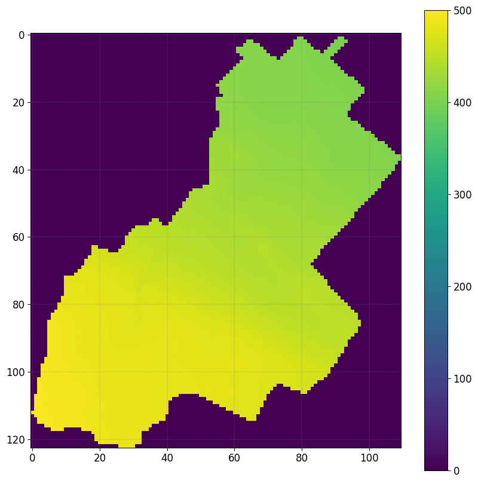
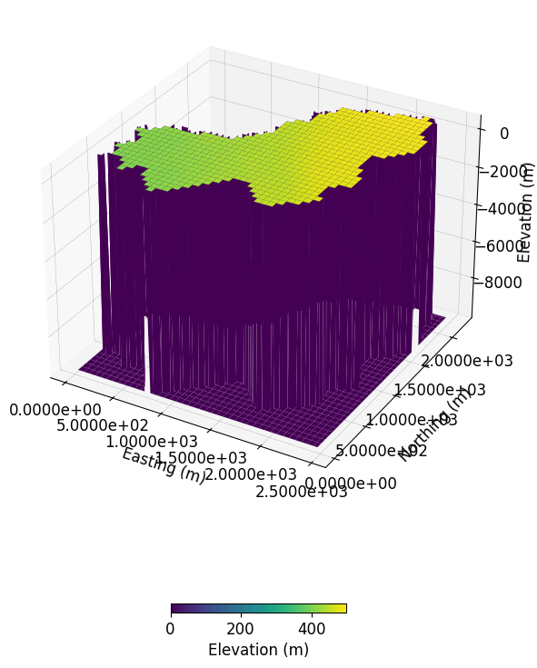
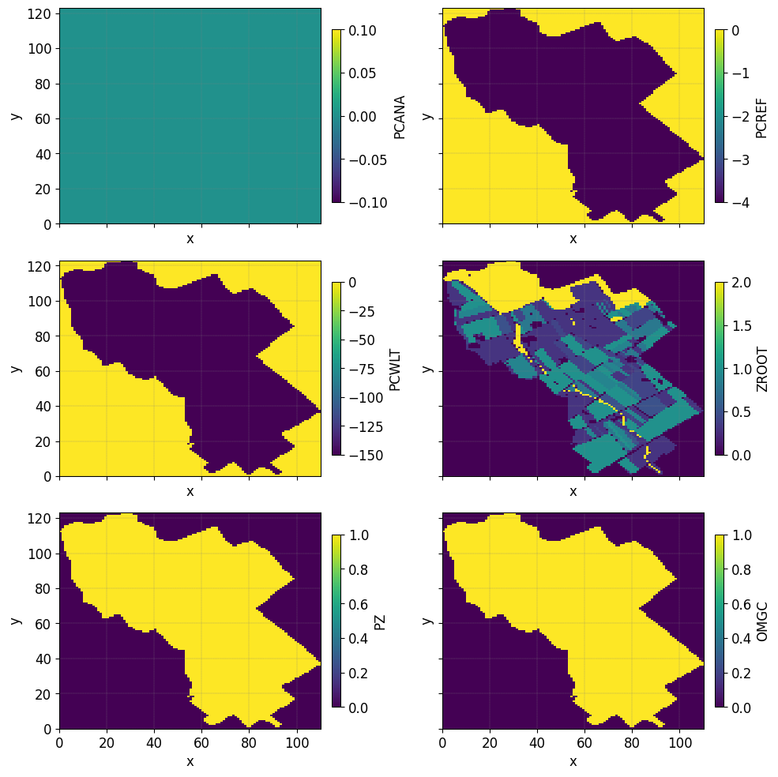
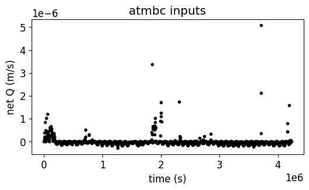

D. La Cecilia and M. Camporese (2022)#
This is a notebook to reproduce outputs from La Cecilia and Camporese (2022)
# Cite this work
We believe in a community-driven approach of open-source tools that are
composable and extensible. If you use this notebook cite the work as:
> La Cecilia, D., and M. Camporese. 2022. Resolving streamflow diel fluctuations in a small agricultural catchment with an integrated surface‐subsurface hydrological model. Hydrological Processes 36(12). doi: 10.1002/hyp.14768.
The notebooks describes:
Preprocessing step: how to build a mesh with different vegetation land cover and a soil including tile drains.
Changing atmospheric boundary conditions Atmbc parameters
Changing Feddes parameters
Changing Soil parameters
Simulation (very long not recommanded to execute): solve the surface-subsurface flow during a year considering different scenarios.
Plot outputs: analysis of the results
spatial distribution of actual ET
spatial distribution of groundwater level depth
```{note} In Progress
All input and ouput data from this study will be openly and publicly available through the Eawag repository ERIC at https://opendata.eawag.ch/group under the project folder “NAWA-Flowpath” to ensure that these data are FAIR: Findable, Accessible, Interoperable and Reproducible.
The CATHY model is freely available at https://bitbucket.org/cathy1_0/cathy/.
import pooch
https://opendata.eawag.ch/group
{admonition} What you should already know In order to complete this tutorial, you should be relatively familiar with using the pyCATHY for: - Building a mesh from a DEM (See {doc}../content/SSHydro/index` for more information.) - Updating soil inputs - …`
Found a bug 🐛/ a typo ? [Email me](mailto:benjamin.mary@unipd.it)
Importing the required packages#
matplotlibin order to plot the data;cathy_toolsis the main object controlling the simulation;pyCATHY.importersallows you to read CATHY input files;pyCATHY.importersallows you to read CATHY output files;pyCATHY.plottersis a set of functions in order to plot simulation outputs.
import os
import matplotlib.pyplot as plt
import numpy as np
from pyCATHY import cathy_tools
from pyCATHY.importers import cathy_inputs as in_CT
from pyCATHY.importers import cathy_outputs as out_CT
from pyCATHY.plotters import cathy_plots as cplt
import matplotlib as mpl
# set some default plotting parameters for nicer looking plots
mpl.rcParams.update({"axes.grid":True, "grid.color":"gray", "grid.linestyle":'--','figure.figsize':(10,10)})
Create a CATHY simulation object#
# Initiate a CATHY model
# ------------------------
path2prj = '.' # add your local path here
simu = cathy_tools.CATHY(dirName=path2prj, prj_name="LaCecilia_2022_HP")
🏁 Initiate CATHY object
```{tip} Multiples scenario
If you want to run multiple scenario and compare them it is recommanded to create a single CATHY object for each of the simulations. For instance:
simu_scenario1 = cathy_tools.CATHY(dirName=ThePathToYourProject, prj_name="scenario1")
simu_scenario2 = cathy_tools.CATHY(dirName=ThePathToYourProject, prj_name="scenario2")
1. Preprocessing step#
Starting from DEM data (dtm_13.val) and parameters (hap.in) files, the preprocessing produce a complete set of files describing physiographic features of a drainage system. Such files represent the preprocessing input files for CATHY simulation.
Build the mesh#
The DEM should be accurate enough to account for an explicit representation of tile trains (diameter between 10 and 60 cm) - spatial resolution of 20x20 m necessary
Outside the region of interest the elevation are set to -9999
DEM, header_DEM = simu.read_inputs('dem')
fig, ax = plt.subplots(1)
img = ax.imshow(DEM,vmin=0,vmax=500)
plt.colorbar(img)
simu.show_input(prop="dem",vmin=0,vmax=500)
🔄 Update hap.in file
🔄 update dem_parameters file


Define root map properties#
The ``veg_map`` is a raster file that defined the position of the vegetation.
VEG_MAP, header_veg_map = simu.read_inputs('root_map')
VEG_MAP
array([[0., 0., 0., ..., 0., 0., 0.],
[0., 0., 0., ..., 0., 0., 0.],
[0., 0., 0., ..., 0., 0., 0.],
...,
[0., 0., 0., ..., 0., 0., 0.],
[0., 0., 0., ..., 0., 0., 0.],
[0., 0., 0., ..., 0., 0., 0.]])
fig, ax = plt.subplots(1)
simu.show_input(prop="root_map", ax=ax,
linewidth=0)
The figure illustrates the vegetation indices, with each index associated with a corresponding pair of Feddes parameters. In the northern region, represented by the forested areas, a root depth of 2 meters is considered. However, in the orange patches indicating urban areas, the root depth is set to a significantly smaller value of 1e-3.
Now we check the values of the Feddes parameters associated with the indice of the vegetation
{note} Feddes parameters - `PCANA: anaerobiosis point - PCREF: field capacity - PCWLT: wilting point - ZROOT: root depth - PZ: pz is an empirical parameter - OMGC: 0<OMGC<1 Compensatory mechanisms for root water uptake`
SPP, FP = simu.read_inputs('soil', MAXVEG=8)
FP
| PCANA | PCREF | PCWLT | ZROOT | PZ | OMGC | |
|---|---|---|---|---|---|---|
| Veg. Indice | ||||||
| 0 | 0.0 | -4.0 | -150.0 | 0.001 | 1.0 | 1.0 |
| 1 | 0.0 | -4.0 | -150.0 | 0.300 | 1.0 | 1.0 |
| 2 | 0.0 | -4.0 | -150.0 | 0.400 | 1.0 | 1.0 |
| 3 | 0.0 | -4.0 | -150.0 | 0.500 | 1.0 | 1.0 |
| 4 | 0.0 | -4.0 | -150.0 | 0.800 | 1.0 | 1.0 |
| 5 | 0.0 | -4.0 | -150.0 | 0.900 | 1.0 | 1.0 |
| 6 | 0.0 | -4.0 | -150.0 | 1.000 | 1.0 | 1.0 |
| 7 | 0.0 | -4.0 | -150.0 | 2.000 | 1.0 | 1.0 |
We can also plot the spatial distribution of the Feddes parameters
simu.update_veg_map()
simu.update_soil(FP_map=FP, show=True)
─────────────────────────────────────────── ⚠ warning messages above ⚠ ────────────────────────────────────────────
The parm dictionnary is empty Falling back to defaults to update CATHYH This can have consequences !!
───────────────────────────────────────────────────────────────────────────────────────────────────────────────────
🔄 update parm file
🔄 Update soil
homogeneous soil
Setting the atmospheric boundary conditions#
Scenario 1, excludes irrigation from the reference simulation. This scenario serves primarily to assess the differences between an agricultural catchment and a natural one.
In order to update the atmospheric boundary conditions we call the following function:
simu.update_atmbc()
Remenber that the functions arguments details can be assessed via:
help(simu.update_atmbc())
# first we read and plot the current atmbc file
# --------------------------------
df_atmbc = simu.read_inputs('atmbc')
simu.show_input('atmbc')

Given the fact that all the values are defined in net Q (m/s), and that all the values are >0, here the scenario exclude the irrigation from the atmospheric boundary conditions.
Let’s update the atmbc values without to with irrigation:
# first we read the atmbc file
# --------------------------------
atmbc_hourlyf = os.path.join(simu.workdir,simu.project_name,'input','atmbc_hourly')
df_atmbc_hourly, HSPATM, IETO = in_CT.read_atmbc(atmbc_hourlyf)
help(simu.update_atmbc)
df_atmbc_hourly = df_atmbc_hourly.iloc[0:-2]
Help on method update_atmbc in module pyCATHY.cathy_tools:
update_atmbc(HSPATM=0, IETO=0, time=None, VALUE=[None, None], netValue=[], show=False, verbose=False, **kwargs) method of pyCATHY.cathy_tools.CATHY instance
Atmospheric forcing term (atmbc - IIN6)
..note:
1 1 HSPATM,IETO
0.0000000e+00 time
5.5e-06 VALUE
12.000000e+03 time
0.00 VALUE
18.000000e+03 time
0.00 VALUE
The values are those of a 200-min rainfall event at a uniform
intensity of 3.3·10-4 m/min, followed by 100 min of drainage.
..note:
In case of simultaneous precipitation and evaporation, we impose at
the surface the net flux, i.e., precipitation minus evaporation.
Parameters
----------
HSPATM : int, optional
- =0 for spatially variable atmospheric boundary condition inputs;
blank or =9999 if unit IIN6 input is to be ignored; otherwise atmospheric BC's are
homogeneous in space.
IETO : int, optional
- =0 for linear interpolation of the atmospheric boundary condition inputs between different
- otherwise the inputs are assigned as a piecewise constant function (ietograph).
The default is 0.
time : list
ATMBC Times in seconds. The default is None.
VALUE : list
List of array. The default is [Precipitation, EvapoTranspiration].
show : bool, optional
Plot atmbc. The default is False.
verbose : bool, optional
Display. The default is False.
**kwargs
Returns
-------
..note:
- Update parm file (NPRT).
- Update CATHYH file (MAXPRT).
simu.update_atmbc(
HSPATM=1,
IETO=0,
time=list(df_atmbc_hourly['time']),
netValue=list(df_atmbc_hourly['value']),
)
simu.show_input('atmbc')
🔄 Update atmbc
🔄 update parm file

Scenario with varying Feddes parameters#
In Scenario 2, we additionally excluded the effect of oxygen stress, whereby roots could take up water even when soil moisture exceeded a threshold according to the Feddes approach
simu.update_soil(FP=new_feddes_parameters)
We considered two test cases in Scenario 3. Starting from Scenario 2, we assumed a homogeneous rooting depth of 0.3 m in the first case and of 2.0 m in the second one.
simu.update_soil(FP=new_feddes_parameters)
# first we read the current soil file
# --------------------------------
simu.update_veg_map()
df_soil_het, df_FP = simu.read_inputs('soil')
# show Feddes parameters table
# --------------------------------
df_FP
| PCANA | PCREF | PCWLT | ZROOT | PZ | OMGC | |
|---|---|---|---|---|---|---|
| Veg. Indice | ||||||
| 0 | 0.0 | -4.0 | -150.0 | 0.001 | 1.0 | 1.0 |
| 1 | 0.0 | -4.0 | -150.0 | 0.300 | 1.0 | 1.0 |
| 2 | 0.0 | -4.0 | -150.0 | 0.400 | 1.0 | 1.0 |
| 3 | 0.0 | -4.0 | -150.0 | 0.500 | 1.0 | 1.0 |
| 4 | 0.0 | -4.0 | -150.0 | 0.800 | 1.0 | 1.0 |
| 5 | 0.0 | -4.0 | -150.0 | 0.900 | 1.0 | 1.0 |
| 6 | 0.0 | -4.0 | -150.0 | 1.000 | 1.0 | 1.0 |
| 7 | 0.0 | -4.0 | -150.0 | 2.000 | 1.0 | 1.0 |
From the table above we observe the values of the Feddes parameters for the different zones defined in the figure above. Here Zroot is varying according to the root map zone.
Check soil properties#
The project folder includes: - A file with homogeneous properties - A file with heterogeneous properties for which the hydraulic conductivity of the layer number 6 is set to \(0.001 m-s^{-1}\) (>0.000073 for other layers)
The soil is discretise in 3 distinct layers:
Depth (cm) |
P orosity |
R esidual m oisture content |
Van Ge nuchten / (cm^-1) |
Van Ge nuchten n |
S pecific storage coef ficient (m^-1) |
Sa turated hy draulic condu ctivity (m/s) |
|---|---|---|---|---|---|---|
0-80 |
0.43 |
0.078 |
0.036 |
1.56 |
1.00 x 10^-3 |
7.3 x 10^-5 |
80-140 (Tile -drain) |
0.43 |
0.078 |
0.036 |
1.56 |
1.00 x 10^-3 |
1.0 x 10^-3 |
140–500 |
0.43 |
0.078 |
0.036 |
1.56 |
1.00 x 10^-3 |
7.3 x 10^-5 |
``{note} Van Genuchten parameters in CATHY -PERMX(NSTR, NZONE): saturated hydraulic conductivity - xx -PERMY(NSTR, NZONE): saturated hydraulic conductivity - yy -PERMZ(NSTR, NZONE): saturated hydraulic conductivity - zz -ELSTOR(NSTR, NZONE): specific storage -POROS`
(NSTR, NZONE): porosity (moisture content at saturation) =
:raw-latex:`\thetaS`
Retention curves parameters VGN, VGRMC, and VGPSAT - VGNCELL (NSTR,
NZONE): van Genuchten curve exponent = n - VGRMCCELL (NSTR, NZONE):
residual moisture content = :raw-latex:`\thetaR` - VGPSATCELL (NSTR,
NZONE): van Genuchten curve exponent –> - VGPSAT == -1/alpha (with
alpha expressed in [L-1]); ```
df_soil, df_FP = simu.read_inputs('soil')
df_soil
| PERMX | PERMY | PERMZ | ELSTOR | POROS | VGNCELL | VGRMCCELL | VGPSATCELL | ||
|---|---|---|---|---|---|---|---|---|---|
| str | zone | ||||||||
| 0 | 0 | 0.000188 | 0.000188 | 0.000188 | 0.00001 | 0.55 | 1.46 | 0.15 | 0.03125 |
| 1 | 0 | 0.000188 | 0.000188 | 0.000188 | 0.00001 | 0.55 | 1.46 | 0.15 | 0.03125 |
| 2 | 0 | 0.000188 | 0.000188 | 0.000188 | 0.00001 | 0.55 | 1.46 | 0.15 | 0.03125 |
| 3 | 0 | 0.000188 | 0.000188 | 0.000188 | 0.00001 | 0.55 | 1.46 | 0.15 | 0.03125 |
| 4 | 0 | 0.000188 | 0.000188 | 0.000188 | 0.00001 | 0.55 | 1.46 | 0.15 | 0.03125 |
| 5 | 0 | 0.000188 | 0.000188 | 0.000188 | 0.00001 | 0.55 | 1.46 | 0.15 | 0.03125 |
| 6 | 0 | 0.000188 | 0.000188 | 0.000188 | 0.00001 | 0.55 | 1.46 | 0.15 | 0.03125 |
| 7 | 0 | 0.000188 | 0.000188 | 0.000188 | 0.00001 | 0.55 | 1.46 | 0.15 | 0.03125 |
| 8 | 0 | 0.000188 | 0.000188 | 0.000188 | 0.00001 | 0.55 | 1.46 | 0.15 | 0.03125 |
| 9 | 0 | 0.000188 | 0.000188 | 0.000188 | 0.00001 | 0.55 | 1.46 | 0.15 | 0.03125 |
layers2plot= [1,6,9]
fig, axs = plt.subplots(1,3,
sharex=True,
sharey=True
)
axs= axs.ravel()
for i, ax in enumerate(axs):
simu.show_input(
prop="soil",
yprop="PERMX",
layer_nb=layers2plot[i],
ax = ax,
linewidth=0,
)
ax.axis('square')
ax.set_title('layer'+ str(i+1))

Read soil file with Tile-drain (and update existing soil file)
{warning} pyCATHY naming convention The project folder comes with the default naming convention for the filenames. If you decide to rename the `soil file, then you have to update the pyCATHY wrapper with the new values (this will overwrite the soil file).`
# define the path to the soil file
soilfile_het = os.path.join(simu.workdir,simu.project_name,'input','soil_het')
# define the path to the dem_parameter file
dem_parmfile = os.path.join(simu.workdir,simu.project_name,'input','dem_parameters')
# define the path to the dem_parameter file
dempar = in_CT.read_dem_parameters(dem_parmfile)
# read soil heterogeneous file
df_soil_het, _ = in_CT.read_soil(soilfile_het,dempar,MAXVEG=8)
df_soil_het
| PERMX | PERMY | PERMZ | ELSTOR | POROS | VGNCELL | VGRMCCELL | VGPSATCELL | ||
|---|---|---|---|---|---|---|---|---|---|
| str | zone | ||||||||
| 0 | 0 | 0.000073 | 0.000073 | 0.000073 | 0.001 | 0.43 | 1.56 | 0.078 | 0.27778 |
| 1 | 0 | 0.000073 | 0.000073 | 0.000073 | 0.001 | 0.43 | 1.56 | 0.078 | 0.27778 |
| 2 | 0 | 0.000073 | 0.000073 | 0.000073 | 0.001 | 0.43 | 1.56 | 0.078 | 0.27778 |
| 3 | 0 | 0.000073 | 0.000073 | 0.000073 | 0.001 | 0.43 | 1.56 | 0.078 | 0.27778 |
| 4 | 0 | 0.000073 | 0.000073 | 0.000073 | 0.001 | 0.43 | 1.56 | 0.078 | 0.27778 |
| 5 | 0 | 0.001000 | 0.001000 | 0.001000 | 0.001 | 0.43 | 1.56 | 0.078 | 0.27778 |
| 6 | 0 | 0.000073 | 0.000073 | 0.000073 | 0.001 | 0.43 | 1.56 | 0.078 | 0.27778 |
| 7 | 0 | 0.000073 | 0.000073 | 0.000073 | 0.001 | 0.43 | 1.56 | 0.078 | 0.27778 |
| 8 | 0 | 0.000073 | 0.000073 | 0.000073 | 0.001 | 0.43 | 1.56 | 0.078 | 0.27778 |
| 9 | 0 | 0.000073 | 0.000073 | 0.000073 | 0.001 | 0.43 | 1.56 | 0.078 | 0.27778 |
simu.update_soil(SPP=df_soil_het)
🔄 Update soil
homogeneous soil
layers2plot= [1,6,9]
fig, axs = plt.subplots(1,3,
sharex=True,
sharey=True
)
axs= axs.ravel()
for i, ax in enumerate(axs):
simu.show_input(
prop="soil",
yprop="PERMX",
layer_nb=layers2plot[i],
ax = ax,
linewidth=0,
)
ax.axis('square')
ax.set_title('layer'+ str(i+1))

2. Run simulation#
Once all the inputs files are updated according to the scenario, it is good practice to run first the preprocessor in verbose = True mode to check if the preprocessing step worked.
Then we can run the processor. As the number of times and points are large in this example it is recommanded to execute it locally.
```python simu.run_preprocessor(verbose=True) simu.run_processor( IPRT1=2, ROWMAX=247, COLMAX=221 )
{tip} Check before running the simulations Before running the simulation it is recommanded to check the parm file
#simu.read_inputs('parm')
parm_file = os.path.join(simu.workdir,simu.project_name,'input','parm')
parm = in_CT.read_parm(parm_file)
Among all the parameters (check using parm.keys()) controlling the behavior of the simulation here is a selection of some important ones:
IPRT1Flag for output of input and coordinate data;TRAFLAGlag for the choice of the data assimilation scheme;DTMINMinimum FLOW3D time step size allowed;NPRTNumber of time values for detailed nodal output and element velocity output;(TIMPRT(I),I=1,NPRT)Time values for detailed output.
3. Plot outputs#
Plot streamflow#
#%% Another interesting graph looking at the **streamflow = f(time)**
simu.show(prop="hgraph")
Plot spatial actual ET#
fig, ax = plt.subplots(1)
simu.show('spatialET',ax=ax, ti=10)
no file specified
<matplotlib.contour.QuadContourSet at 0x7ff41ed22a10>

Plot the Ground Water Depth (GWD)#
fig, axs = plt.subplots(1,2)
fig.subplots_adjust(right=0.8)
cbar_ax = fig.add_axes([0.85, 0.15, 0.05, 0.7])
cmap = simu.show('WTD',ax=axs[0], ti=9, colorbar=False)
cmap = simu.show('WTD',ax=axs[1], ti=10, colorbar=False)
plt.colorbar(cmap,cax=cbar_ax)
no file specified
no file specified
<matplotlib.colorbar.Colorbar at 0x7ff41eeb4c70>
{tip} Compute differences In order to compute the differences between two times pass a list of time to ti
simu.show('WTD',ti=[1,10])
no file specified
<matplotlib.contour.QuadContourSet at 0x7ff41f2cd0c0>